Terminal analysis
Terminal analysis (TA) is a pass of semantic analysis whose responsibility is to determine if a terminal was initialized in current simulation cycle prior to reading it, and to determine if all output terminals were initialized at the end of simulation cycle. Following sections explain implementation details. Readers are advised to read user documentation (Terminal initialization) thoroughly first.
Introduction
TA is performed over final program CFG (after function inline and pseudo-while creation). TA is a non-standard data flow analysis. While TA operates over a CFG until reaching a convergence point, transforming input and output sets using transfer and join functions, join functions are not context free. Alternate paths not directly encoded in CFG can be examined in case of loops.
Transfer functions change terminal initialization state for a particular variable used on the LHS of an assignment.
Join functions merge results from multiple incoming paths. Different join nodes have different join functions.
As for all DFA style analyses, proving algorithm termination is necessary. TA is proven to terminate because all rules for DFA termination are satisfied:
- Terminal initialization state is a finite height semilattice. While two join operators are defined, set of values has a total order in both cases.
- Transfer functions are monotone. Transfer functions always update initialization state to a greater or equal value. Terminal cannot be uninitialized. Terminal, when once fully initialized, cannot become partially initialized until a join node is reached.
Terminal initialization state
Terminal initialization state is held in a map-like structure that holds pairs
of terminals with their corresponding initialization state. Initialization state
of a terminal at a certain point in CFG can be either NONE, PARTIAL or FULL.
NONE denotes that terminal is not initialized on all incoming paths.
PARTIAL denotes that in the case of tensor terminals, terminal is initialized
on all incoming paths, but that it is not proven that all indices were initialized.
FULL denotes that terminal is initialized on all incoming paths.
Following tables show definitions of two supported join operators. Both join operators are
commutative and associative, so the selection of shown combinations is reduced.
Note that when multiple join operators are used for a complex join function such as
the end of for loop, special care about operator precedence must be taken.
| operand | operand | intersect |
|---|---|---|
NONE |
NONE |
NONE |
NONE |
PARTIAL |
NONE |
NONE |
FULL |
NONE |
PARTIAL |
PARTIAL |
PARTIAL |
PARTIAL |
FULL |
PARTIAL |
FULL |
FULL |
FULL |
| operand | operand | union |
|---|---|---|
NONE |
NONE |
NONE |
NONE |
PARTIAL |
PARTIAL |
NONE |
FULL |
FULL |
PARTIAL |
PARTIAL |
PARTIAL |
PARTIAL |
FULL |
FULL |
FULL |
FULL |
FULL |
CFG traversal
Following sections describe how different CFG structures are traversed and corresponding transfer and join operations that are performed.
Beginning of a simulation cycle
dummy_global is considered as the beginning of a simulation cycle. New terminal
initialization state object is created with state set to NONE for all terminals.
State is propagated directly through nodes that do not have associated transfer function.
Otherwise, appropriate transfer function is applied.
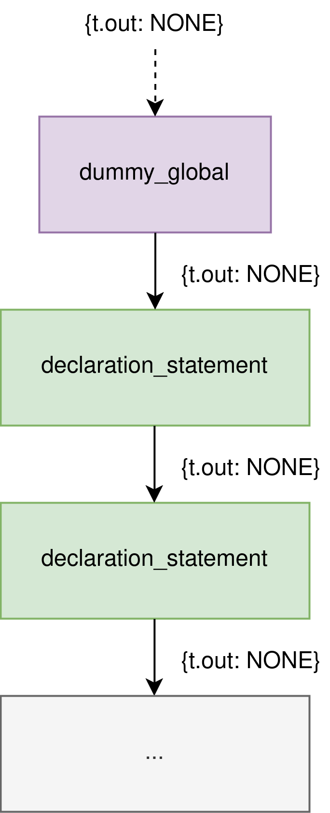
Assignment statements
Assignment statements are the only CFG nodes that have an associated transfer function. If assignment to a terminal is performed, terminal initialization state is updated. Otherwise, no action is performed.
Variable assignment (x = ...) sets terminal initialization state to FULL.
Tensor assignment (x[index] = ...) sets terminal initialization state to PARTIAL,
but only if former value was NONE. Once state is set to FULL it cannot become
PARTIAL until a join node is reached.
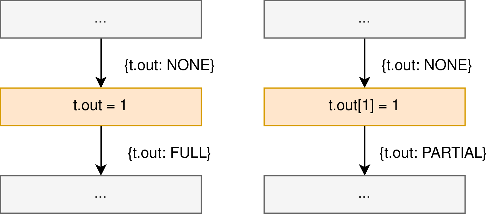
Shorthand assignment statements
Shorthand assignment is considered as a special case, as it incorporates both a read and a write of the target variable. SA does not alter terminal initialization state, as that state depends on the previous state of the target variable. Errors and warnings are reported per rules for terminal reads.
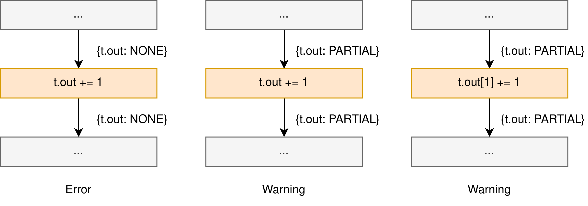
Jump statements
Initialization state of a terminal remains unchanged between two points
that do not have any jumps and variable assignments. If jumps are present,
possible paths to the point after the jump are joined using intersect operator.
If no such path exists, code is considered unreachable and TA errors and warnings
are not reported.
Warning
Currently, no warnings are raised for unreachable code. This will be implemented in the future.
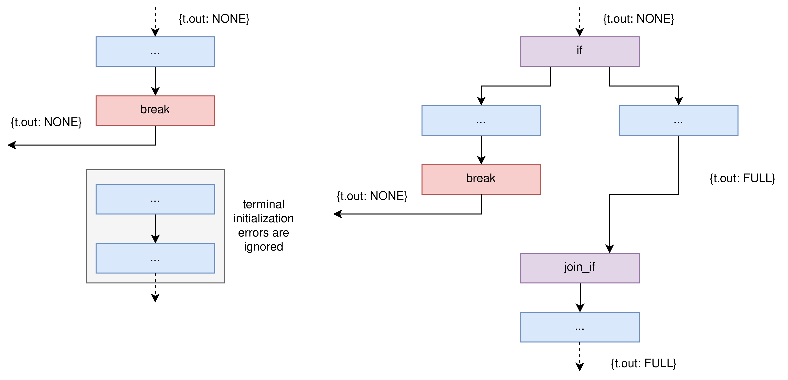
If statement
After if statement, terminal initialization of all entry paths to JOIN_IF node
is joined using intersect operator. Using intersect enables finding terminals
that are initialized on all possible paths.
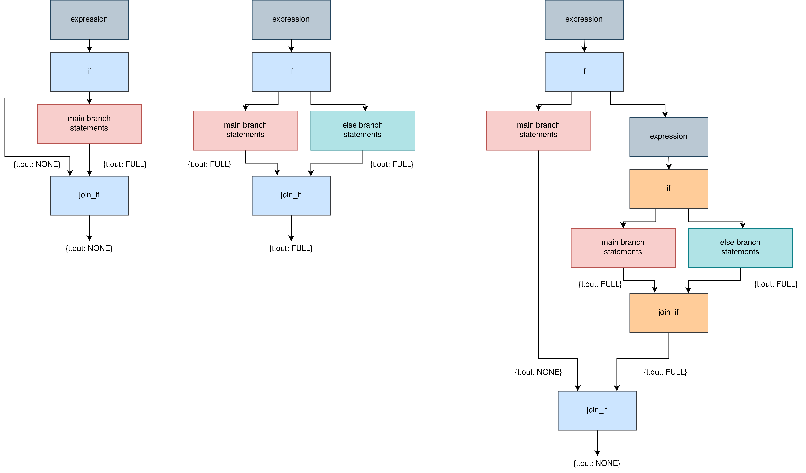
For statement
After for statement not proven to be executed at least once, terminal state is the same
as before the loop.
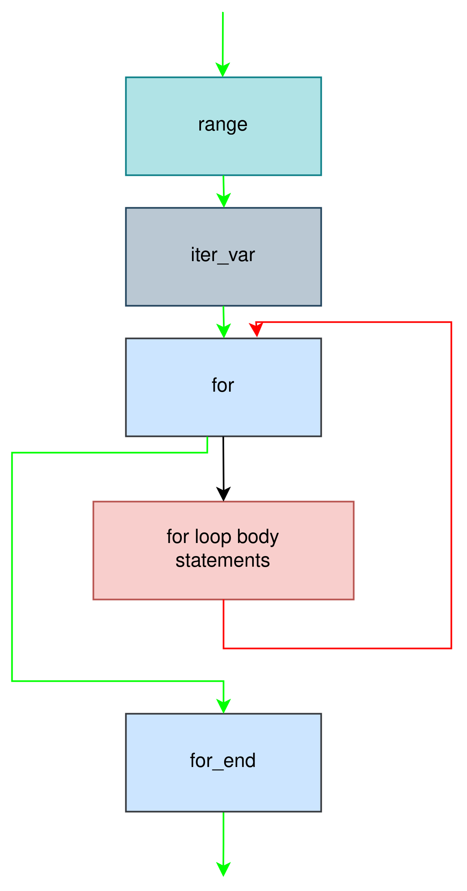
After for statement proven to be executed at least once, new state is calculated in
two steps. Output state from all possible loop exits is joined using intersect
operator. Loop exit state is then joined with the state before the loop using union
operator.
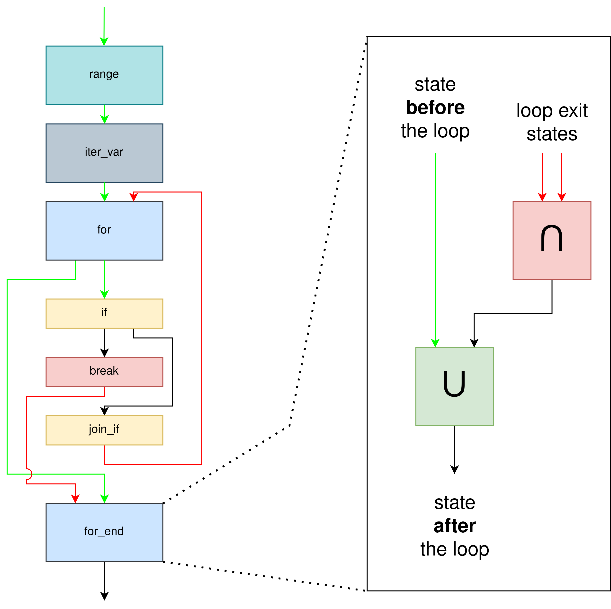
While statement
As it cannot be proven in the general case that while loop was executed at least once,
terminal initialization state is the same as before the loop.
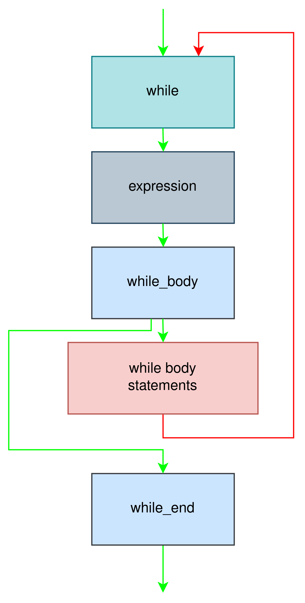
Guard blocks
Guard blocks behave as ordinary statement blocks, as unreachable branch is always pruned during AST threading.
Function call
All function calls are inlined in CFG. Every function call is considered as a separate
context that both observes potentially different initialization state and that alters
current initialization state. Function calls alter initialization state present
before the function call. After function call, intialization state of all possible
function exits is joined using intersect operator.
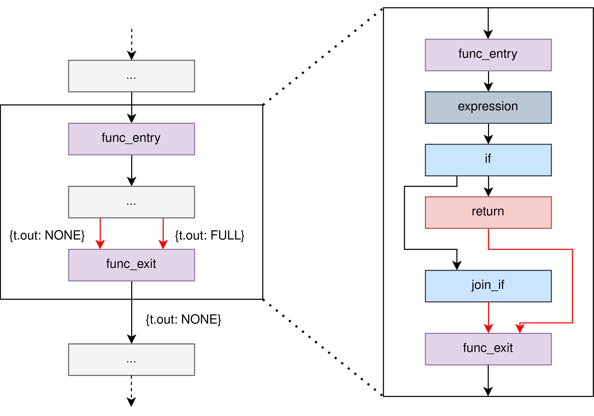
Final analysis
After TA has converged, annotated CFG is analyzed to see if rules are satisfied.
Terminal reads
To analyze whether all reads are valid, CFG must be traversed again. Note that while CFG and AST nodes are shared, traversing the AST is not sufficient because of inlining. Every function call is considered as a separate context and contains copies of the original AST nodes which cannot be found in AST directly, but are present when traversing CFG. AST when traversed using AST links between nodes contains only nodes originally present in program source code.
Upon traversing variable reference node, if a terminal is referenced, current
terminal initialization state is analyzed.
Error is raised if reading a terminal with NONE initialization state is attempted.
Warning is raised if reading a terminal with PARTIAL initialization state
is attempted.
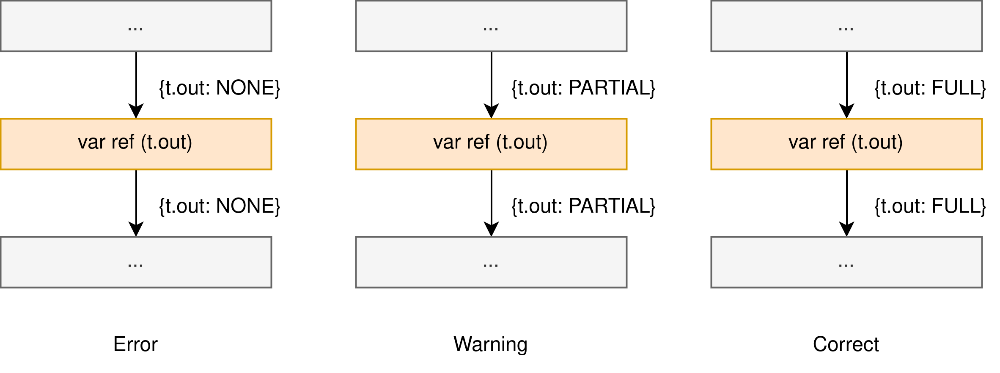
Shorthand assignment is considered as a special case of terminal read, as it incorporates both a read and a write of the target variable. As SA statements are represented as special variable definition nodes in the CFG, they are differentiated from ordinary writes by their associated AST node.
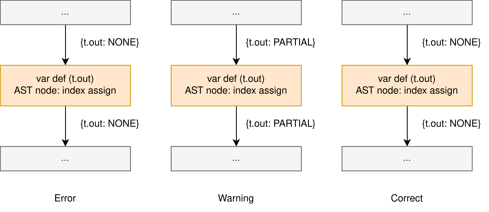
End of a simulation cycle
Last node in pseudo-while loop block is considered as the last node of a simulation cycle.
END_WHILE node of pseudo-while loop cannot be used for TA due to join operator
implementation for while loop. Note that using last node in loop block is possible in this
case as pseudo-while loop can have only function exit node as the last node.
Entry functions do not support return statement.
break and continue equivalent does not exist for pseudo-while loop.
Initialization state of the last node is analyzed.
Error is raised for every terminal with NONE initialization state.
Warning is raised for every terminal with PARTIAL initialization state.
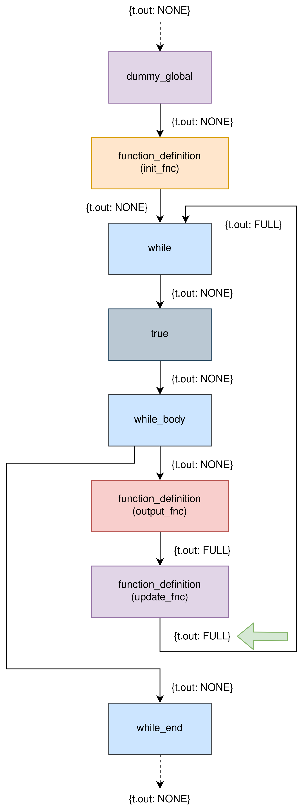